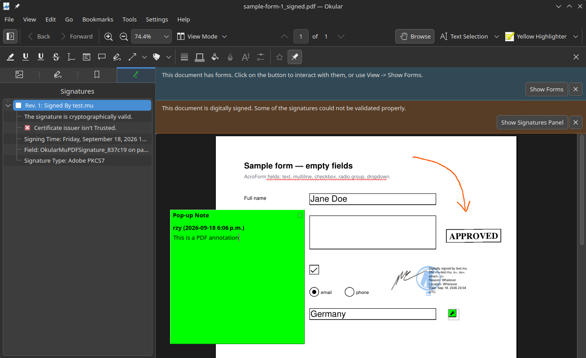
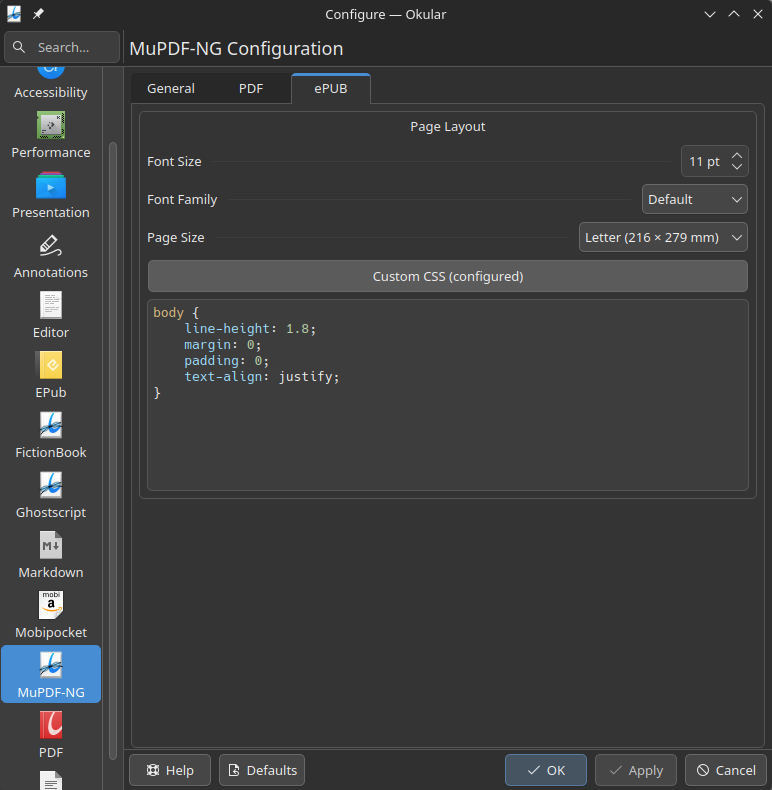
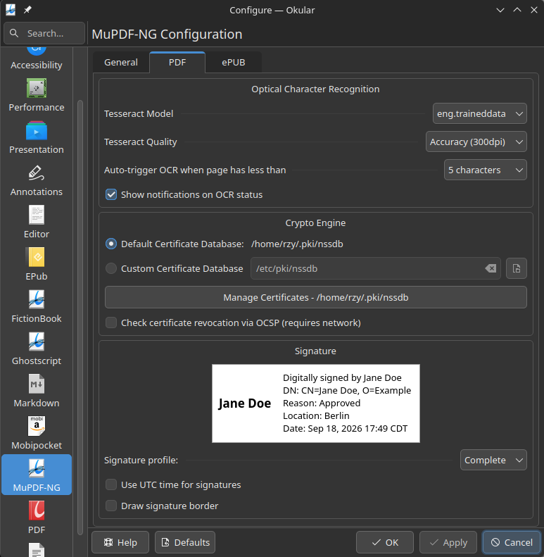
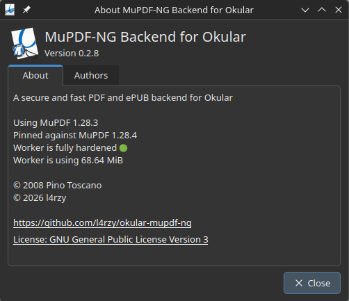

{kind=link}
{kind=link}
{kind=link}
{kind=link}
Sandboxed by design
PDF is a complex format. It should not be parsed and rendered in Okular’s memory space, unconfined. The document engine runs in an isolated worker process.
Click any screenshot to view it fullscreen — close button top-right, or press Esc / click outside.




PDF is a complex format. It should not be parsed and rendered in Okular’s memory space, unconfined. The document engine runs in an isolated worker process.
The Poppler backend is feature-rich but sluggish on large documents — a known weakness of Poppler. MuPDF renders quickly even where Poppler stalls.
The default ePUB backend renders poorly and slowly, even on a high-end CPU. MuPDF-ng brings quality typesetting plus custom CSS, page sizes, and ePUB-to-PDF export.
Document parsing, rendering, and mutation live in a separate native worker. The Qt host bridge owns IPC, frame mapping, OCR scheduling, caches, and NSS crypto. Control messages are serialized shared models; documents and outputs pass only as file descriptors — the worker never opens arbitrary paths.
memfd frames (up to 8 slots, 128 MiB budget, 128 MiB per-frame cap) validated before display.| Category | Capabilities | okular-mupdf-ng | Official backends |
|---|---|---|---|
| Safety & isolation | Sandboxed out-of-process worker | Yes | No (in-process) |
| Formats | PDF, ePUB | Yes | Yes |
| ePUB customisation | Custom CSS, page sizes | Yes | No |
| ePUB export | Export ePUB to PDF | Yes | No |
| PDF forms | AcroForm inputs, checks, radios, choices | Yes | Yes (+ XFA / JS) |
| Signatures | Verify & create (NSS crypto) | Yes | Yes (+ GPG) |
| Cert manager | NSS certificate manager | Yes | No |
| Annotations | Text, highlight, line, shape, ink, stamp, caret | Yes | Yes |
| Document tools | Search, TOC, links, fonts, metadata, files | Yes | Yes |
| Printing & exporting | Print & export | Yes | Yes |
| OCR | Built-in Tesseract page OCR | Yes | No |
Prebuilt packages for common KDE distros (Arch, Debian, Ubuntu, Fedora, openSUSE Tumbleweed) are available on the Releases page. Installing this plugin overrides the default backend for PDF and ePUB — you can pick a backend per document by enabling Show backend selection dialog in Okular.